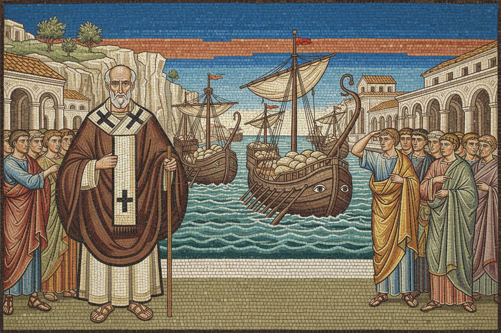
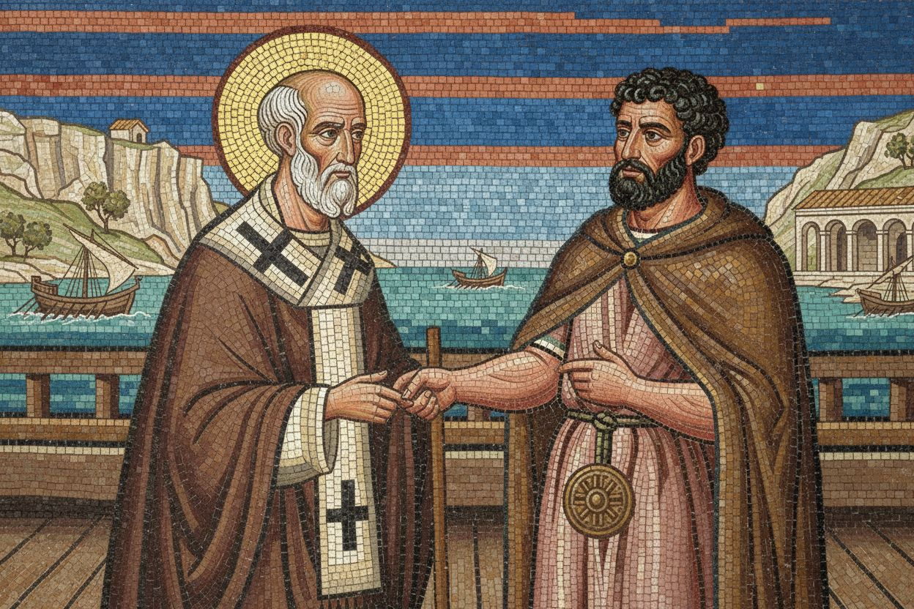
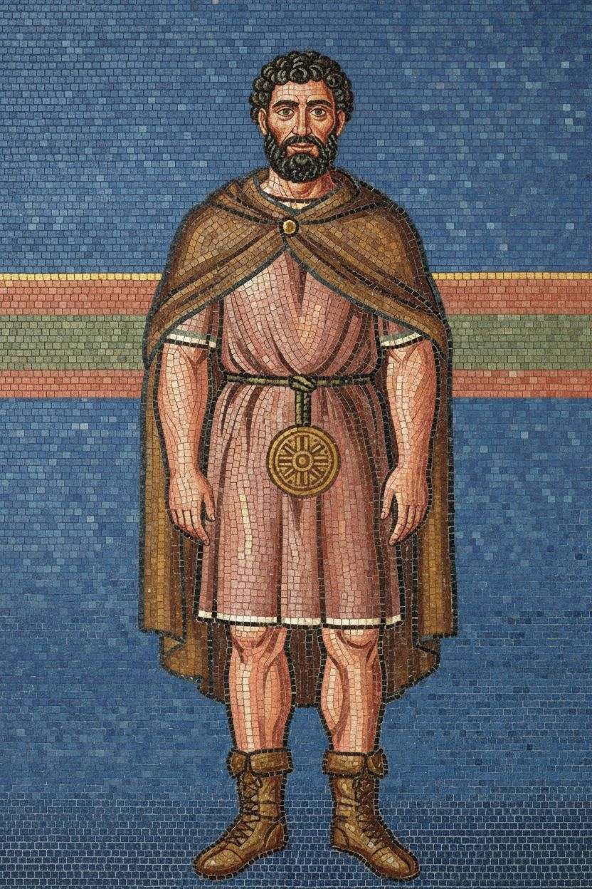

1. Plachty!
nenamalováno


2. Slib
nenamalováno


Postavy v novém stylu



Styl
style: >- A real late-Roman wall mosaic in the technique of the apse mosaic of Santa Pudenziana in Rome (about 410 AD). The whole picture is built from small square glass and stone tesserae set in visible rows that follow the contours of each shape; every surface (faces, clothes, sea, sky, rocks, ships) is made of tesserae, with thin grey mortar lines between them and a slightly uneven, shimmering surface. Sky in bands of deep blue and glittering gold tesserae with streaks of red and orange cloud, as in the apse. Warm, natural, individual faces modelled with graduated bands of pink, ochre and brown tesserae, calm dark eyes; people in long Roman tunics and draped mantles (pallium) whose folds are lines of darker tesserae; gentle storytelling gestures. A scene from everyday life, like a Roman harbour-mosaic of working people: plain heads of hair, the sky and sea showing directly behind every head. Buildings as Roman arcades and colonnades with golden roof tiles. Every shape edged with a row of dark tesserae. Matte glass and stone: not a drawing, not a cartoon, not a flat vector illustration, not a 3D render. mood: calm, warm, human, reverent, sunny, timeless palette: - '#C9A23F' - '#C98A4B' - '#7A8A4A' - '#5F7690' - '#8E3B2E' - '#F2EAD3' - '#2B211B' negative: >- No text, no letters, no words, no watermark. No smooth ink line art, no flat cartoon colouring, no Gothic architecture, no snow. aspect_ratio: '3:2'